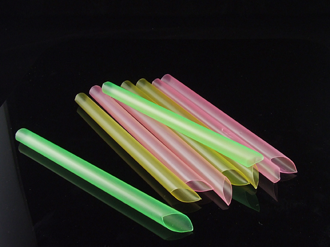
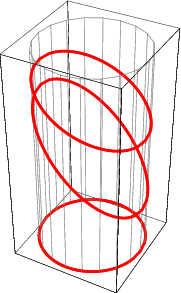
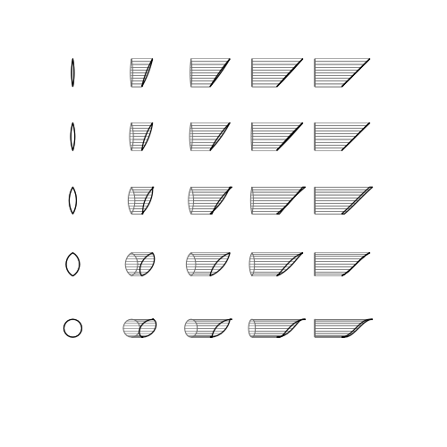
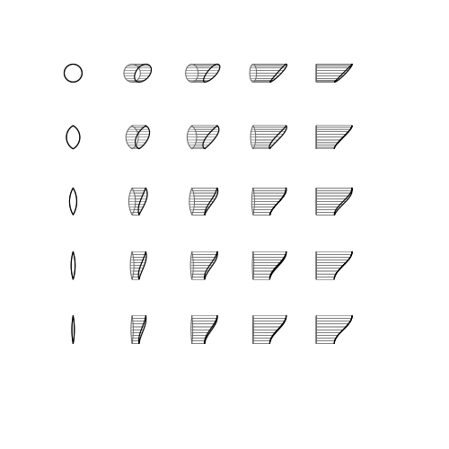

To Find Quarrel in a Straw
A pointless exercise.
Tuesday, July 28, 2015 · 3 min read
To all the friends I made this summer. Thanks for all the memories. Amicabilibus!
As with many exciting things, this one began with the prospect of bubble tea.
In case you’ve been missing out, bubble tea contains large tapioca pearls in it and so it comes with extra-special straws that have twice the diameter of normal straws.
Have you ever really thought about those straws? Of course you haven’t. I applaud you and your sanity.
I, of course, have really thought about those straws. I occasionally say things like “what if you tried to drink mercury through a meter-long straw?”, which causes people to make excuses and leave, and TSA agents to make you take your shoes off.*
But this being my blog, I’m now going to impose some thoughts about those straws upon you. Brace yourself.
See, the trouble is that you have to poke these straws through the top of your drink. They have pointy tips to facilitate this, as kindly illustrated by the very legit-looking website free-stock-illustration.com:

Actually, anyone who’s ever poked a bendy straw through a juice box knows exactly what I’m talking about. They have pointy tips, right? Right.
It turns out that you should be very concerned about this. Or not, if you’re more of the “big picture” kind of person. Personally, I find this very disturbing.
What happens when you cut a straw? Well, a straw is a cylinder, so you should get a cylindrical section. Wolfram Mathworld reminds us that planar slices of cylinders are ellipses:

But ellipses are not pointy. This is bad. Where does the pointiness come from?
If you ask someone, they’ll probably say things like “maybe it’s just a really thin ellipse” or “maybe it’s actually not pointy and only cuts because the plastic is very sharp”. So I guess it’s worth mentioning that (1) a thinner ellipse would be just as blunt, and (2) if the plastic was that sharp, your tongue would bleed each time you drank a Capri-Sun.
I guess a more fundamental question to ask is, how are bubble tea straws cut? This turns out to be surprisingly hard to find useful information on. This site suggests some sort of knifing mechanism. I envision a large-scale straw guillotine that chops up hundreds of straws a minute and leaves a pile of straw-rubble on the factory floor. (It turns out that straw guillotine is a thing, and happens to be a thing in my Google search history now. Please don’t judge me?)
In any case, the point (ha!) is that when you use a blade to cut a straw, you momentarily flatten it. This is probably easiest to see if you pick up a straw and try to cut it with scissors: the part right at the blade gets flattened the way a garden hose does if you step on it.
So really, what we’re thinking about is, “what happens when you squish a straw?”. I whipped up some images to help think about what’s happening (ping me if you want the code).
This is what happens when you unsquish a cut straw (squishedness is on the Y axis, different profiles are along the X axis):

Yay, the rounded cylinder is pointy!
Depending on how traumatic your trigonometry class was, that curve in the bottom right corner should look vaguely familiar. It’s half a period of a sinusoid.
Can you convince yourself why this makes sense? Think about what the side profile of a spring looks like…
We knew that a planar slice wouldn’t form a straight-line cut because ellipses aren’t pointy. So a natural question to ask is, what shape does a planar cut correspond to?
Do you have a guess?

Yep, it’s the inverse sine function (why?). Can you come up with a way to map “squished” functions to “cylindrical” functions? Is this function invertible? So many questions!
To be honest, this post isn’t about straws—as interesting as they are. It’s about looking around and finding exciting things. It’s about ignoring the grown-ups who think straws are unexciting. Because we’re surrounded by exciting things. Everywhere. Like happiness and magic and diatomic nitrogen. It’s your job to go seek them out.
(*But really, could you drink mercury out of a meter-high straw? Even if you managed to suck out all the air in the straw, the vacuum would only manage to hold up 76 centimeters of mercury… Gasparo Berti thought about this stuff in the 1600s, and sent a letter to Galileo which got the ball rolling and led to Torricelli proving the existence of a vacuum and inventing the barometer. Read more in this delightful article by Karl Dahlke.)